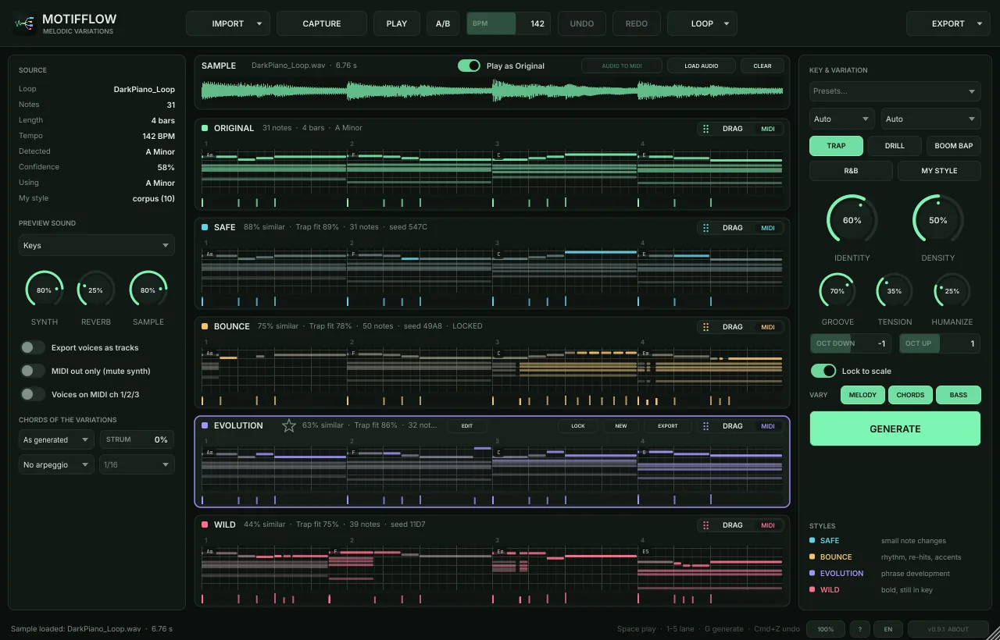
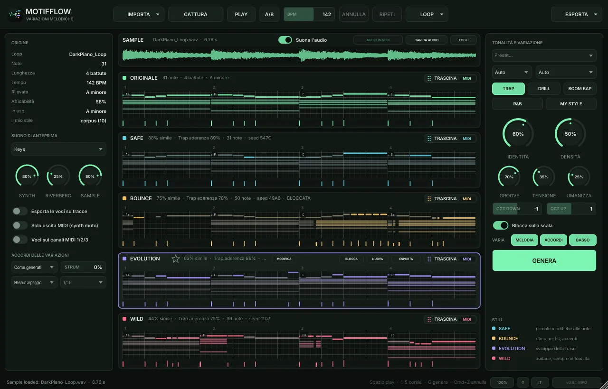

MotifFlow guide · version 0.9Guida di MotifFlow · versione 0.9
From one loop to four ideasDa un loop a quattro idee
Everything you need to go from a MIDI or audio loop to variations playing in your DAW. Ten minutes to read, a few seconds to use.
Tutto quello che serve per passare da un loop MIDI o audio a variazioni che suonano nella tua DAW. Dieci minuti di lettura, pochi secondi di utilizzo.


01Quick startPartenza rapida
- Load MotifFlow as an instrument on a MIDI track (it is a VST3 / AU instrument, not a MIDI effect), or open the standalone app.
- Bring a loop: drop a
.midor an audio loop on the window, or use IMPORT ▾. No loop at hand? IMPORT ▾ → New idea from scratch / examples. - Pick the genre (Trap, Drill, Boom Bap, R&B or My Style). Key and tempo are detected for you.
- Listen: click a lane and press Space. Safe, Bounce, Evolution and Wild go from close to bold.
- Press GENERATE (or G) for new ideas. Lock what you like first: locked lanes are never overwritten.
- Drag the lane's handle onto a track in your DAW: MIDI notes or rendered WAV audio, your choice.
- Carica MotifFlow come strumento su una traccia MIDI (è uno strumento VST3 / AU, non un effetto MIDI), oppure apri l'app standalone.
- Porta un loop: trascina un
.mido un loop audio sulla finestra, oppure usa IMPORTA ▾. Nessun loop a portata di mano? IMPORTA ▾ → Nuova idea da zero / esempi. - Scegli il genere (Trap, Drill, Boom Bap, R&B o My Style). Tonalità e tempo vengono rilevati da soli.
- Ascolta: clicca una corsia e premi Spazio. Safe, Bounce, Evolution e Wild vanno dalla più vicina alla più audace.
- Premi GENERA (o G) per nuove idee. Prima blocca quello che ti piace: le corsie bloccate non vengono mai sovrascritte.
- Trascina la maniglia della corsia su una traccia della DAW: note MIDI o audio WAV renderizzato, a scelta.
02Bring a loopPortare un loop
MIDI file
Drop a .mid or use IMPORT ▾ → MIDI file. Multi-track files are merged (melody, chords, bass); drums on channel 10 are ignored.
Audio loop
WAV, MP3, AIFF, FLAC or OGG. Press AUDIO TO MIDI to turn it into notes (see the next chapter). Play as Original lets you hear the sample in place of the Original lane.
CAPTURE
Press CAPTURE, play the clip on the same DAW track (or play a MIDI keyboard in the standalone), then STOP CAPTURE. The take becomes the Original, aligned to the bar.
From scratch
IMPORT ▾ → New idea from scratch: a starting loop (chords, 808, melody) in the panel's genre, key and tempo, in a Dark, Emotional or Uplifting mood. Or try one of the examples.
Loops can be from 1 to 32 bars. A longer file uses its first 32 bars and the status line says so. Key and scale are detected automatically: you can force them with the two menus at the top right.
File MIDI
Trascina un .mid oppure IMPORTA ▾ → File MIDI. I file con più tracce vengono uniti (melodia, accordi, basso); la batteria sul canale 10 viene ignorata.
Loop audio
WAV, MP3, AIFF, FLAC o OGG. Premi AUDIO IN MIDI per trasformarlo in note (vedi il capitolo successivo). Suona l'audio ti fa sentire il campione al posto della corsia Originale.
CATTURA
Premi CATTURA, fai suonare la clip sulla stessa traccia della DAW (o suona una tastiera MIDI nello standalone), poi ferma la cattura. La ripresa diventa l'Originale, allineata alla battuta.
Da zero
IMPORTA ▾ → Nuova idea da zero: un loop di partenza (accordi, 808, melodia) nel genere, tonalità e tempo del pannello, con atmosfera Cupa, Emozionale o Luminosa. Oppure prova uno degli esempi.
I loop possono durare da 1 a 32 battute. Un file più lungo usa le prime 32 battute e la riga di stato lo segnala. Tonalità e scala vengono rilevate in automatico: puoi forzarle con i due menu in alto a destra.
03Better audio to MIDIAudio in MIDI migliore
MotifFlow listens to the sample with a neural network (Basic Pitch) running on your computer: nothing is uploaded. The result depends mostly on what you feed it.
Prepare the file
- Use the melodic part alone when you can: the piano, keys or pluck stem, not the full beat. Drums are removed automatically, but a clean stem always wins.
- Cut it exactly to the loop: start on the downbeat, end on a bar line, 2 to 8 bars. Silence or a count-in at the start shifts everything.
- Put the tempo in the file name, for example
dark_piano_142bpm.wav: MotifFlow uses it instead of guessing. Inside a DAW the project tempo also helps. - Prefer WAV to MP3, and the dry sound to one drowned in reverb, delay, distortion or sidechain pumping.
- Easy: piano, electric piano, guitar, plucks, strings. Hard: very slow pads, bells with long tails, full mixes with vocals.
Fix the notes with ADJUST NOTES
After the analysis the ADJUST NOTES FROM AUDIO panel opens. The sliders change the notes in real time, without listening again. Turn on Play as Original and compare the sample with the notes while you move them.
| What you hear or see | What to move |
|---|---|
| Long notes chopped into many short ones | Split-Merge to the right (merges) |
| Repeated notes stuck together into one | Split-Merge to the left (splits) |
| Soft notes missing | More-Fewer to the left |
| Extra notes that are not in the sample | More-Fewer to the right, then Min len up a little |
| 808 or bass mixed into the melody | Lowest up (above the bass register) |
| Notes an octave or a twelfth above the real ones | Clean overtones on |
| Hi-hats or claps turned into notes | Remove drums on (analyses again, about 2 s) |
| Notes slightly off the grid | Snap to 1/16 on |
RESET goes back to the defaults, DONE closes the panel, ADJUST NOTES opens it again. Your settings are kept for the next sample.
MotifFlow clean-up
MotifFlow clean-up (on by default, in the same panel) works on top of the network: a sample tuned a few cents off (pitch-shifted, vinyl, varispeed) is measured and corrected before listening, so the notes do not flip between two keys. Turn it off to hear what Basic Pitch finds on its own and compare the two results on your sample.
Finish by hand
Open the Original with EDIT: double-click to add or delete a note, drag to move it, use the arrows to transpose. Two minutes of cleaning on the Original give much better variations, because every lane is built from it.
MotifFlow ascolta il campione con una rete neurale (Basic Pitch) che gira sul tuo computer: non viene caricato nulla online. Il risultato dipende soprattutto da cosa gli dai.
Prepara il file
- Usa solo la parte melodica quando puoi: lo stem di piano, keys o pluck, non il beat completo. La batteria viene tolta in automatico, ma uno stem pulito vince sempre.
- Taglialo esattamente sul loop: inizio sul primo tempo, fine su una stanghetta, da 2 a 8 battute. Silenzio o un count-in all'inizio spostano tutto.
- Metti il tempo nel nome del file, per esempio
dark_piano_142bpm.wav: MotifFlow usa quello invece di stimarlo. Dentro una DAW aiuta anche il tempo del progetto. - Meglio WAV che MP3, e il suono asciutto piuttosto che affogato in riverbero, delay, distorsione o sidechain.
- Facili: piano, piano elettrico, chitarra, pluck, archi. Difficili: pad molto lenti, campane con code lunghe, mix completi con la voce.
Correggi le note con REGOLA NOTE
Dopo l'analisi si apre il pannello REGOLA LE NOTE DALL'AUDIO. Gli slider cambiano le note in tempo reale, senza riascoltare. Attiva Suona l'audio e confronta il campione con le note mentre le muovi.
| Cosa senti o vedi | Cosa muovere |
|---|---|
| Note lunghe spezzate in tante note corte | Dividi-Unisci verso destra (unisce) |
| Note ripetute incollate in una sola | Dividi-Unisci verso sinistra (divide) |
| Mancano le note deboli | Più-Meno verso sinistra |
| Note in più che nel campione non ci sono | Più-Meno verso destra, poi Durata min un po' più alta |
| 808 o basso finiti nella melodia | Più bassa più in alto (sopra il registro del basso) |
| Note un'ottava o una dodicesima sopra quelle vere | Pulisci armonici attivo |
| Hi-hat o clap trasformati in note | Togli batteria attivo (rianalizza, circa 2 s) |
| Note leggermente fuori griglia | Griglia 1/16 attiva |
RESET torna ai valori predefiniti, FATTO chiude il pannello, REGOLA NOTE lo riapre. Le impostazioni restano per il campione successivo.
Pulizia MotifFlow
La Pulizia MotifFlow (attiva di serie, nello stesso pannello) lavora in aggiunta alla rete: un sample calante o crescente di qualche cent (pitch-shift, vinile, varispeed) viene misurato e corretto prima dell'ascolto, così le note non oscillano tra due tonalità. Spegnila per sentire cosa trova Basic Pitch da solo e confrontare i due risultati sul tuo sample.
Rifinisci a mano
Apri l'Originale con MODIFICA: doppio clic per aggiungere o eliminare una nota, trascina per spostarla, frecce per trasporla. Due minuti di pulizia sull'Originale danno variazioni molto migliori, perché ogni corsia nasce da lì.
04Shape the variationsModellare le variazioni
- Genre
- Changes the rhythmic vocabulary: Trap half-time bounce, Drill syncopated 16ths and slides, Boom Bap swing, R&B laid-back feel with richer chords. Groove sets how strongly it is applied.
- Identity
- How close the variations stay to your loop. High = recognisable, low = new ideas.
- Density
- Fewer or more notes than the Original.
- Tension
- Harmonic colour: 0 is pure and consonant, higher adds 7ths, 9ths and substituted chords, never wrong notes.
- Humanize
- Small timing and velocity differences so the MIDI sounds played. At 0 the exported MIDI is perfectly on the grid.
- Oct down / Oct up
- How far the melody may move by octaves.
- VARY
- Which parts may change: turn off CHORDS and BASS to vary only the melody over the same chords, or turn off MELODY to re-harmonise under the same melody.
- Lock to scale
- Every changed note is forced into the key.
Knob changes regenerate the unlocked lanes in the background: the window never freezes, GENERATE shows GENERATING… while it works.
- Genere
- Cambia il vocabolario ritmico: bounce half-time della Trap, 16esimi sincopati e glide della Drill, swing del Boom Bap, feel rilassato e accordi più ricchi dell'R&B. Groove decide quanto applicarlo.
- Identità
- Quanto le variazioni restano vicine al tuo loop. Alta = riconoscibile, bassa = idee nuove.
- Densità
- Meno o più note rispetto all'Originale.
- Tensione
- Colore armonico: a 0 è puro e consonante, più alta aggiunge settime, none e accordi sostituiti, mai note sbagliate.
- Umanizza
- Piccole differenze di tempo e velocity perché il MIDI sembri suonato. A 0 il MIDI esportato è perfettamente in griglia.
- Oct down / Oct up
- Di quante ottave può spostarsi la melodia.
- VARIA
- Quali parti possono cambiare: spegni ACCORDI e BASSO per variare solo la melodia sugli stessi accordi, oppure spegni MELODIA per riarmonizzare sotto la stessa melodia.
- Blocca sulla scala
- Ogni nota cambiata viene portata in tonalità.
Le manopole rigenerano le corsie non bloccate in background: la finestra non si blocca mai, GENERA mostra GENERAZIONE… mentre lavora.
05Keep what you likeTenere ciò che ti piace
- Lock a lane (LOCK): GENERATE and the knobs leave it alone. A lane you edit by hand is locked automatically.
- Lock a bar: click the bar strip above the notes. That bar stays identical when the lane changes.
- Lock notes: select them and press L (white outline). They survive every new idea.
- Star a version next to the lane name to keep it in your favourites, saved with the project and available even after loading another loop.
- VERSIONS lists the earlier ideas of a lane: every GENERATE keeps the one it replaces (knob moves do not fill the list).
- A/B (or A) while playing: hear the Original at the same point of the loop, press again to go back.
- UNDO / REDO (Cmd/Ctrl+Z, Cmd/Ctrl+Shift+Z) cover note edits, NEW, GENERATE, extend, transpose and restored versions.
- Blocca una corsia (BLOCCA): GENERA e le manopole non la toccano. Una corsia modificata a mano si blocca da sola.
- Blocca una battuta: clicca la striscia delle battute sopra le note. Quella battuta resta identica quando la corsia cambia.
- Blocca delle note: selezionale e premi L (contorno bianco). Sopravvivono a ogni nuova idea.
- Metti la stella accanto al nome della corsia per tenere la versione nei preferiti, salvati con il progetto e disponibili anche dopo aver caricato un altro loop.
- VERSIONI elenca le idee precedenti di una corsia: ogni GENERA conserva quella che sostituisce (i movimenti delle manopole non riempiono la lista).
- A/B (o A) durante il play: senti l'Originale nello stesso punto del loop, premi di nuovo per tornare.
- ANNULLA / RIPETI (Cmd/Ctrl+Z, Cmd/Ctrl+Shift+Z) valgono per modifiche alle note, NUOVA, GENERA, estendi, trasponi e versioni ripristinate.
06Extend, transpose, vary a partEstendere, trasporre, variare una parte
LOOP ▾ → Extend
4 bars become 8 (or 8 → 16, 16 → 32). The Original repeats; each variation keeps its first half and continues with a new second half: perfect for a hook with an answer.
LOOP ▾ → Transpose
Up or down by up to an octave. The Original, every variation and their earlier versions move together, and a key chosen by hand follows. A loaded audio sample is not transposed.
Vary only a part
Right-click a lane → New idea for part of the loop: first half, second half, a pair of bars, or only the last bar for a new ending. Everything else stays identical.
LOOP ▾ → Estendi
4 battute diventano 8 (oppure 8 → 16, 16 → 32). L'Originale si ripete; ogni variazione tiene la prima metà e prosegue con una seconda metà nuova: perfetto per una frase con risposta.
LOOP ▾ → Trasponi
Su o giù fino a un'ottava. L'Originale, tutte le variazioni e le loro versioni precedenti si spostano insieme, e una tonalità scelta a mano le segue. Un campione audio caricato non viene trasposto.
Variare solo una parte
Tasto destro su una corsia → Nuova idea per una parte del loop: prima metà, seconda metà, una coppia di battute oppure solo l'ultima battuta per un nuovo finale. Tutto il resto resta identico.
07Chords, sounds and presetsAccordi, suoni e preset
The chord names of every lane are shown above the notes. Under Chords of the variations (left panel) you change how the variations play their chords, without touching the Original:
- Voicing: as generated, close, drop 2, spread, inversion up or down.
- Strum: the chord notes start one after the other, like a guitar or a harp.
- Arpeggio: up, down, up-down or random at 1/8, 1/16, 1/16 triplets or 1/32.
All of this goes into the MIDI you drag and export. Presets set genre, knobs, preview sound and chord style in one click; once you move a knob the menu shows (modified).
Preview sounds and genre kits
The built-in synth is only a preview (the final sound comes from your instruments), but it helps to hear the idea in the right colour. Preview sound → Kit gives each voice its own instrument and follows the genre:
| Genre | Melody | Chords | Bass |
|---|---|---|---|
| Trap | flute | dark piano | 808 |
| Drill | dark piano | strings | hard 808 |
| Boom Bap | vibraphone | dusty Rhodes | round plucked bass |
| R&B | soft lead | Rhodes with chorus | warm analog bass |
My Style uses the kit of the genre closest to your loops. Keys, Pluck, Pad, Bell and 808 play everything with one sound. The WAV you drag or export uses the same sound.
I nomi degli accordi di ogni corsia compaiono sopra le note. In Accordi delle variazioni (pannello sinistro) cambi come le variazioni suonano gli accordi, senza toccare l'Originale:
- Voicing: come generati, stretti, drop 2, larghi, rivolto su o giù.
- Strum: le note dell'accordo partono una dopo l'altra, come una chitarra o un'arpa.
- Arpeggio: su, giù, su-giù o casuale a 1/8, 1/16, terzine di 1/16 o 1/32.
Tutto questo finisce nel MIDI che trascini ed esporti. I Preset impostano genere, manopole, suono di anteprima e stile degli accordi in un clic; appena muovi una manopola il menu mostra (modificato).
Suoni di anteprima e kit per genere
Il synth interno è solo un'anteprima (il suono finale viene dai tuoi strumenti), ma aiuta a sentire l'idea con il colore giusto. Suono di anteprima → Kit dà a ogni voce il suo strumento e segue il genere:
| Genere | Melodia | Accordi | Basso |
|---|---|---|---|
| Trap | flauto | piano scuro | 808 |
| Drill | piano scuro | archi | 808 duro |
| Boom Bap | vibrafono | Rhodes polveroso | basso pizzicato tondo |
| R&B | lead morbido | Rhodes con chorus | basso analogico caldo |
My Style usa il kit del genere più vicino ai tuoi loop. Keys, Pluck, Pad, Bell e 808 suonano tutto con un solo suono. Il WAV che trascini o esporti usa lo stesso suono.
08Into your DAWNella tua DAW
Drag and drop
Each lane has a DRAG handle with a MIDI / WAV chip. Click the chip to choose, then drag the handle onto a track:
- MIDI: the notes, with voicing, strum and arpeggio applied. Turn on Export voices as tracks to get melody, chords and bass on separate tracks.
- WAV: the lane played with the preview sound, 48 kHz / 24-bit, a seamless loop. While WAV is chosen the lanes are rendered in the background, so the drop is instant.
- Hold Alt/Option while dragging to get the other format just once.
Each drag is one file: MIDI with one track (melody, chords and bass together), or with Export voices as tracks on a multitrack MIDI (one track per voice, most DAWs create a track for each); WAV is one stereo mix. For separate audio files per voice use EXPORT ▾ → Separate voices.
Export
EXPORT ▾ saves the selected lane as MIDI, WAV or separate voices (melody, chords and bass as .mid and .wav each, ready for sample packs), or every lane into a folder. File names carry genre, style, key and tempo. Exports run in the background; the status line tells you when they are done.
Trascina e rilascia
Ogni corsia ha una maniglia TRASCINA con un chip MIDI / WAV. Clicca il chip per scegliere, poi trascina la maniglia su una traccia:
- MIDI: le note, con voicing, strum e arpeggio applicati. Attiva Esporta le voci su tracce per avere melodia, accordi e basso su tracce separate.
- WAV: la corsia suonata con il suono di anteprima, 48 kHz / 24 bit, in loop senza stacchi. Finché è scelto WAV le corsie vengono renderizzate in background, così il rilascio è immediato.
- Tieni premuto Alt/Option durante il trascinamento per avere l'altro formato una volta sola.
Ogni trascinamento è un solo file: MIDI con una traccia (melodia, accordi e basso insieme) oppure, con Esporta le voci su tracce acceso, un MIDI multitraccia (una traccia per voce, la maggior parte delle DAW crea una traccia per ognuna); il WAV è un unico mix stereo. Per file audio separati per voce usa ESPORTA ▾ → Voci separate.
Esportare
ESPORTA ▾ salva la corsia selezionata come MIDI, WAV o voci separate (melodia, accordi e basso in .mid e .wav ciascuno, pronti per i sample pack), oppure tutte le corsie in una cartella. I nomi dei file contengono genere, stile, tonalità e tempo. Gli export girano in background; la riga di stato ti dice quando hanno finito.
09Play with your own soundsSuonare con i tuoi suoni
MotifFlow sends the notes of the selected lane to its MIDI output while it plays, in time with the DAW. Turn on MIDI out only (mute synth) to hear only your instrument, and Voices on MIDI ch 1/2/3 to send melody, chords and bass to three different instruments.
Ableton Live
- MotifFlow on a MIDI track.
- A second MIDI track with your instrument.
- On that track: MIDI From → the MotifFlow track → MotifFlow; Monitor → In.
- With voices on channels: three tracks, each with MIDI From = MotifFlow and channel 1, 2 or 3.
FL Studio
In the plugin wrapper (gear icon → MIDI) set an Output port, for example 1, and the same Input port on your synth's channel.
Reaper
On the MotifFlow track: Routing → Add new send to your synth's track, audio none, MIDI all (or one channel).
Bitwig Studio
Put a Note Receiver on your instrument's track with the MotifFlow track as source.
Logic Pro / GarageBand
An instrument plug-in cannot send MIDI to other tracks in Logic: use drag and drop or export.
Standalone app
In Options → Audio/MIDI Settings choose a MIDI output. On a Mac turn on the IAC Driver (Audio MIDI Setup) to reach any DAW; on Windows use a virtual port such as loopMIDI.
MotifFlow manda le note della corsia selezionata alla sua uscita MIDI mentre suona, a tempo con la DAW. Attiva Solo uscita MIDI (synth muto) per sentire solo il tuo strumento, e Voci sui canali MIDI 1/2/3 per mandare melodia, accordi e basso a tre strumenti diversi.
Ableton Live
- MotifFlow su una traccia MIDI.
- Una seconda traccia MIDI con il tuo strumento.
- Su quella traccia: MIDI From → la traccia di MotifFlow → MotifFlow; Monitor → In.
- Con le voci sui canali: tre tracce, ognuna con MIDI From = MotifFlow e il canale 1, 2 o 3.
FL Studio
Nel wrapper del plugin (ingranaggio → MIDI) imposta una Output port, per esempio 1, e la stessa Input port sul canale del tuo synth.
Reaper
Sulla traccia di MotifFlow: Routing → Add new send verso la traccia del synth, audio nessuno, MIDI tutti (o un canale).
Bitwig Studio
Metti un Note Receiver sulla traccia del tuo strumento con la traccia di MotifFlow come sorgente.
Logic Pro / GarageBand
In Logic un plugin strumento non può mandare MIDI ad altre tracce: usa il trascinamento o l'export.
App standalone
In Options → Audio/MIDI Settings scegli un'uscita MIDI. Su Mac attiva l'IAC Driver (Configurazione MIDI Audio) per raggiungere qualsiasi DAW; su Windows usa una porta virtuale come loopMIDI.
10Learn my styleImpara il mio stile
Press LEARN MY STYLE… and choose a folder of your own MIDI loops (sub-folders too). MotifFlow measures how you play — favourite grid positions, swing, accents, chord pushes, 7ths and 9ths, melodic steps, and your typical phrases (what you tend to play after what) — and creates the MY STYLE genre. It also tells you which built-in genre is closest to your loops.
10 to 50 loops give a reliable profile. Everything stays on your computer: these are statistics on the notes, nothing is sent anywhere. The style is available in every project and saved inside the DAW project too.
Premi IMPARA IL MIO STILE… e scegli una cartella con i tuoi loop MIDI (anche sottocartelle). MotifFlow misura come suoni — posizioni preferite sulla griglia, swing, accenti, anticipi degli accordi, settime e none, passi della melodia e le tue frasi tipiche (cosa tendi a suonare dopo cosa) — e crea il genere MY STYLE. Ti dice anche quale genere integrato somiglia di più ai tuoi loop.
Da 10 a 50 loop danno un profilo affidabile. Tutto resta sul tuo computer: sono statistiche sulle note, non viene inviato nulla. Lo stile è disponibile in ogni progetto ed è salvato anche dentro il progetto della DAW.
11ShortcutsScorciatoie
The same list is in the app: ? → Keyboard and mouse shortcuts, or press ?. On Windows use Ctrl where it says Cmd.
| Space | Play / stop | G | Generate new ideas |
| 1–5 | Select a lane | A | A/B with the Original |
| Cmd+Z | Undo | Cmd+Shift+Z | Redo |
| Delete | Delete selected notes | L | Lock / unlock notes |
| Arrows | Move / transpose (Shift = beat / octave) | Cmd+A | Select all |
| Cmd+0 | Show the whole loop | Esc | Back to all lanes |
| Double-click | New note / delete a note | Alt+drag | Free move, or the other drag format |
Interface too small or too large? The 100% button at the bottom right scales everything to 125, 150 or 175%.
La stessa lista è nell'app: ? → Scorciatoie da tastiera e mouse, oppure premi ?. Su Windows usa Ctrl dove c'è scritto Cmd.
| Spazio | Avvia / ferma | G | Genera nuove idee |
| 1–5 | Seleziona una corsia | A | A/B con l'Originale |
| Cmd+Z | Annulla | Cmd+Shift+Z | Ripeti |
| Canc | Elimina le note selezionate | L | Blocca / sblocca le note |
| Frecce | Sposta / trasponi (Shift = movimento / ottava) | Cmd+A | Seleziona tutto |
| Cmd+0 | Mostra tutto il loop | Esc | Torna a tutte le corsie |
| Doppio clic | Nuova nota / elimina una nota | Alt+trascina | Spostamento libero, o l'altro formato |
Interfaccia troppo piccola o troppo grande? Il pulsante 100% in basso a destra la porta a 125, 150 o 175%.
12TroubleshootingProblemi e soluzioni
My DAW does not show MotifFlow
MotifFlow is an instrument: look among instruments, not MIDI effects. Rescan plug-ins (Ableton: Settings → Plug-ins, VST3 system folders on). Plug-in folders: Mac ~/Library/Audio/Plug-Ins/VST3 and Components; Windows C:\Program Files\Common Files\VST3.
I hear nothing
Check that MIDI out only is off, that the SYNTH knob is up, and that the track is armed or monitored if your DAW needs it. In the standalone app choose the audio output in Options.
The variations sound too far from my loop
Raise Identity, lower Tension, try Safe first, and switch off VARY for the parts you want untouched. If the loop came from audio, clean the Original first: wrong notes there spread to every lane.
The tempo of an audio loop is wrong
Put the BPM in the file name (loop_90bpm.wav) and trim the file exactly to whole bars, then load it again.
GENERATE says ACTIVATE…
The trial has ended or MotifFlow is not activated yet. Your projects still open, play and can be edited; to generate, export and drag again, click ACTIVATE… (or ABOUT → LICENCE…) and enter your key or start the trial.
An UPDATE button appeared at the bottom right
A new version of MotifFlow is out: click it to open the download page. MotifFlow checks at most once a day and sends nothing about you; switch it off in ? → Check for updates once a day.
MotifFlow closed unexpectedly
The standalone app saves your session every 30 seconds and offers to restore it at the next start; inside a DAW the project saves it. Please send us the log: Mac ~/Library/Application Support/MotifFlow/MotifFlow.log, Windows %APPDATA%\MotifFlow\MotifFlow.log.
Still stuck? Write to support (address at the bottom of the home page) with your system, DAW, the steps to reproduce the problem and the log file.
La DAW non mostra MotifFlow
MotifFlow è uno strumento: cercalo tra gli strumenti, non tra gli effetti MIDI. Fai un rescan dei plugin (Ableton: Impostazioni → Plug-in, cartelle di sistema VST3 attive). Cartelle dei plugin: Mac ~/Library/Audio/Plug-Ins/VST3 e Components; Windows C:\Program Files\Common Files\VST3.
Non sento niente
Controlla che Solo uscita MIDI sia spento, che la manopola SYNTH sia alzata e che la traccia sia armata o in monitor se la DAW lo richiede. Nell'app standalone scegli l'uscita audio in Options.
Le variazioni sono troppo lontane dal mio loop
Alza Identità, abbassa Tensione, prova prima Safe e spegni VARIA per le parti che vuoi intatte. Se il loop arriva da un audio, pulisci prima l'Originale: le note sbagliate lì finiscono in tutte le corsie.
Il tempo di un loop audio è sbagliato
Metti i BPM nel nome del file (loop_90bpm.wav) e taglia il file esattamente su battute intere, poi ricaricalo.
GENERA dice ATTIVA…
La prova è finita oppure MotifFlow non è ancora attivato. I tuoi progetti si aprono, suonano e si modificano lo stesso; per tornare a generare, esportare e trascinare, clicca ATTIVA… (oppure ABOUT → LICENZA…) e inserisci la chiave o avvia la prova.
In basso a destra è comparso il pulsante AGGIORNA
È uscita una nuova versione di MotifFlow: cliccalo per aprire la pagina di download. MotifFlow controlla al massimo una volta al giorno e non invia niente su di te; si spegne da ? → Controlla gli aggiornamenti una volta al giorno.
MotifFlow si è chiuso all'improvviso
L'app standalone salva la sessione ogni 30 secondi e alla riapertura propone di ripristinarla; dentro la DAW la salva il progetto. Mandaci il log: Mac ~/Library/Application Support/MotifFlow/MotifFlow.log, Windows %APPDATA%\MotifFlow\MotifFlow.log.
Ancora bloccato? Scrivi all'assistenza (indirizzo in fondo alla home page) con sistema, DAW, i passi per riprodurre il problema e il file di log.